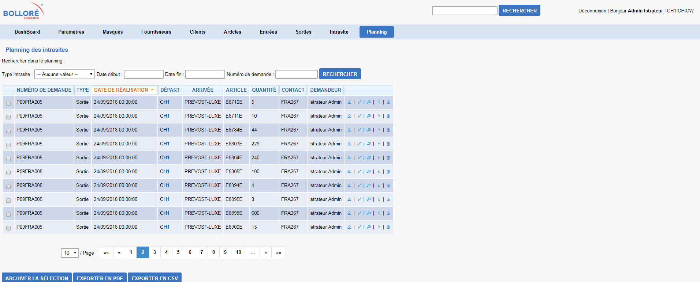

<div id="single-portfolio">
	<div id="portfolio-details" class="container">
		<a class="close-folio-item" href="#">
			<i class="fa fa-times"></i>
		</a>
		
		<div class="row">
			<div class="col-sm-9">
				<div class="project-info">
					<h3>Interface de gestion d'import et d'export</h3>
					<p>Au cours de mon alternance au sein de la société Iorga j'ai été amené à travailler sur l’application "SquareNET". Cette
						application a été développé pour la société BOLLORE qui est un groupe français international essentiellement de transport,
						de logistique, et de communication. Cette aplication est une interface qui va permettre de voir les differents les
						livraisons, receptions, articles pour les différents clients. On aura également la possiblité de voir le planning des
						livraisons et des receptions. L'application permet de faire du CRUD sur les differents models citez précédemment et
						de faire du trie et de la pagination</p>
						<ul>
							<li>Projet développer en C# avec ASP.NET</li>
							<li>Utilisation de ASP.NET MVC et de Razor</li>
							<li>Projet découper en 2 sous projets avec comme structure du MVVM </li>
						</ul>
				</div>
			</div>
			<div class="col-sm-3">
				<div class="project-details">
					<h3>Details du projet</h3>
					<p>
						<span>Client: </span>Bolloré</p>
					<p>
						<span>Tag:</span> C#, ASP.NET MVC, Razor, MVVVM </p>
				</div>
			</div>
		</div>
	</div>
</div>